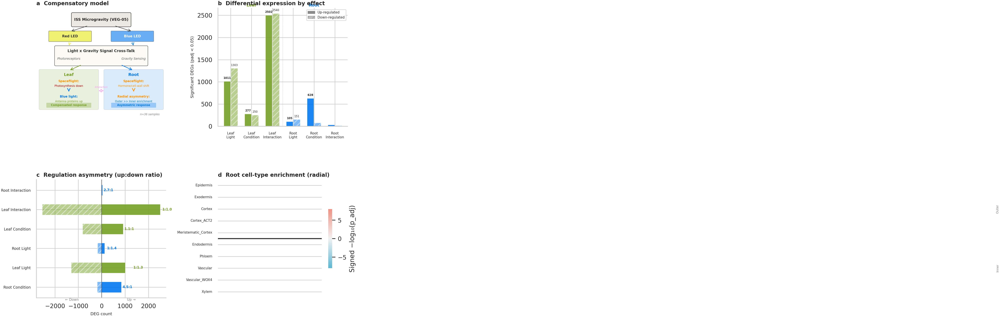
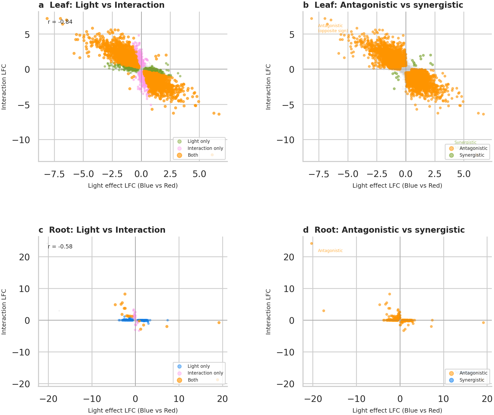
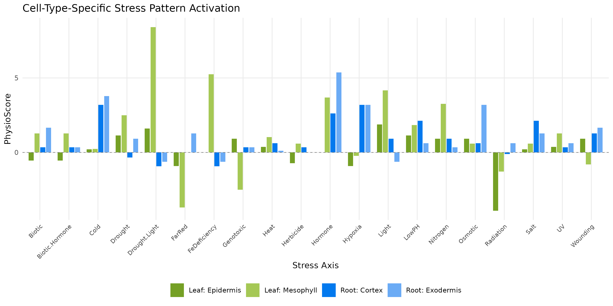

Spaceflight profoundly alters plant gene expression, but how growth conditions modulate this response remains poorly understood. We analyzed RNA-seq from tomato grown aboard the ISS under red or blue LED illumination using a 2 × 2 factorial design (Light × Condition) across leaf and root tissues. Light quality dominated the leaf transcriptome (2,314 light DEGs vs. 527 condition DEGs), whereas spaceflight dominated the root response (704 condition DEGs vs. 256 light DEGs). The Light × Condition interaction comprised 5,042 leaf genes (25% of the expressed transcriptome), with a strong negative correlation between light and interaction log-fold-changes (r = −0.84), consistent with compensatory dynamics: pathways pre-activated by one light condition show attenuated spaceflight responses. Cell-type resolution revealed radial asymmetry in root, with outer layers (Cortex_ACT2: 8.3:1 up/down; OR = 26.9) showing opposite enrichment to inner layers. PhysioSpace stress-pattern decoding showed spaceflight suppresses light-related stress programs in leaves (Light flight effect −27.2 to −32.2) while activating biotic/hormone defense programs in roots (+14.2 under red LED, +58.4 under blue LED) — the root biotic/hormone response showing the strongest light-quality interaction of any stress axis. Cell-type mapping confirmed the asymmetry, with root exodermis showing the strongest hormone activation and leaf mesophyll the strongest light-stress response. These findings have implications for ISS growth-chamber light design and for understanding how environmental context shapes spaceflight biology.
Light quality modulates spaceflight stress decoding, with cell-type asymmetry in tomato
A 2 × 2 (Light × Condition) analysis of ISS tomato RNA-seq (OSD-767) across leaf and root tissues, quantifying how red vs blue LED light interacts with spaceflight — resolved to cell types and decoded with PhysioSpace stress patterns.
Headline: light quality and spaceflight interact through compensatory rather than additive dynamics (leaf interaction r = −0.84); the spaceflight response is a tissue-specific mosaic — light-stress suppression in leaves, biotic/hormone defense priming in roots — with strong radial cell-type asymmetry.
Abstract
Highlights
Light vs spaceflight, by organ
Light dominates the leaf (2,314 vs 527 DEGs); spaceflight dominates the root (704 vs 256).
Compensatory interaction
5,042 leaf interaction genes (25% of the transcriptome); light vs interaction LFCs anti-correlate (r = −0.84).
Radial cell-type asymmetry
Outer root layers respond opposite to inner (Cortex_ACT2 OR = 26.9); exodermis shows the strongest hormone activation.
PhysioSpace decoding
Spaceflight suppresses leaf light-stress programs and primes root biotic/hormone defense (+58.4 under blue LED).
Selected figures



Data & code
- Manuscript:
manuscript/osd767_manuscript.md - Analysis code:
analysis/(DE, interaction, cell-type deconvolution, PhysioSpace decoding) - Results & tables:
supplementary_tables/,extra_results/ - Figures:
figures_main/andfigures_supplementary/
Sequencing data from NASA OSDR (OSD-767); cite the accession. OSDR data remain subject to the NASA Open Data policy. Sibling analysis to the VEG-05 host×microbiome integration.